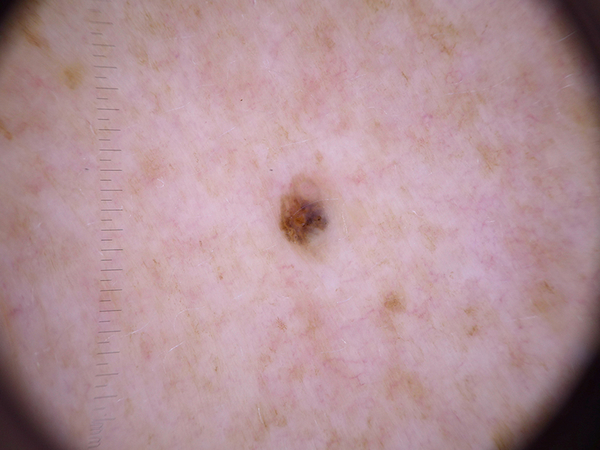
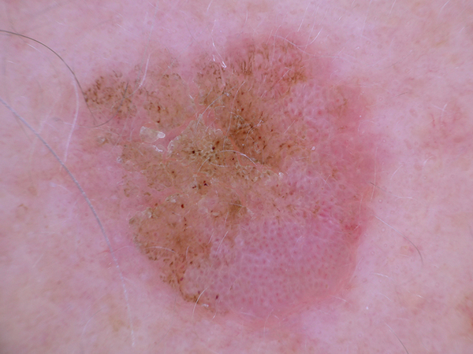
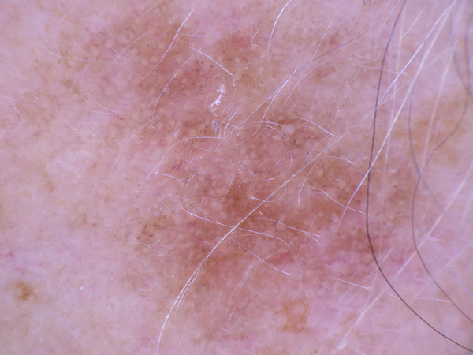
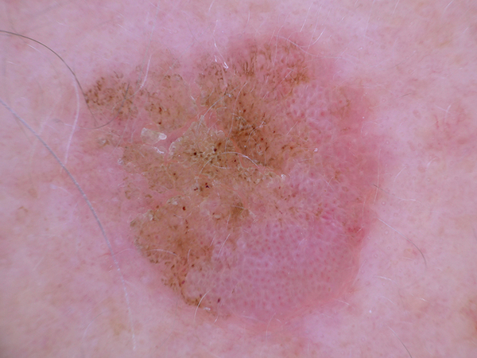
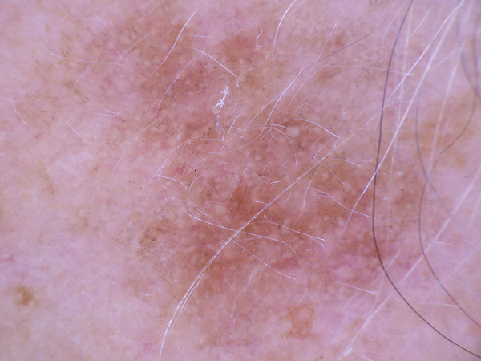

-
What is this lesion?
Actinic Keratoses and Intraepithelial Carcinoma are common noninvasive, variants of squamous cell carcinoma that can be treated locally without surgery. These lesions may progress to invasive squamous cell carcinoma – which is usually not pigmented.
-
What does it look like?
Both types commonly show surface scaling and commonly are devoid of pigment. Actinic keratoses are more common on the face and Bowen’s disease is more common on other body sites.
-
Causes
Both types are induced by UV-light. The surrounding skin is usually typified by severe sun damaged (except in cases of Bowen’s disease that are caused by HPV infection).
-
Known risk factors
- Have a history of a lot of sun exposure/sunburn
- Older than 40
- Live in a sunny place
- Work outdoors
- Chronic systemic immunosuppression
-
Should I see a doctor?
YES. If left untreated, 5-10% of these lesions will turn into a type of skin cancer squamous cell carcinoma. It is best to have the lesion treated by a doctor.
-
What the doctor would do about it?
Treatment options include lesion directed (liquid nitrogen cryotherapy) and field directed therapies (topical creams and photodynamic therapy).

 


